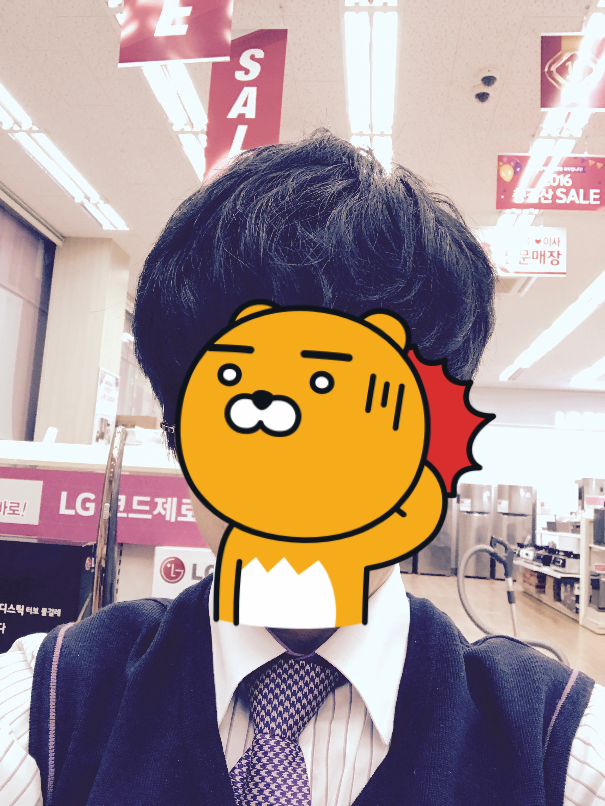

일대기
기억에 남는 경험
2015년 식품생명과학과로 입학이후 약 4년의 휴학을 거쳐 다시 학교로 돌아오게 되었습니다.
4년동안 많은 일들을 했습니다.
새로운 일과 제가 좋아하는 일을 찾기 위해서 노력했습니다.
그러다 우연치 않은 기회를 통해서 가전판매 매니저를 하게 되었습니다.
그 이후 2년간의 대체복무 이후 여러 사업을 해보았습니다.
하지만 하는 일 모두 흥미를 느끼기 힘들었고 돈보다는 내가 해보고 싶은 일을
하고 싶다는 생각을 하게 되었습니다.
그렇게 떠돌이 생활을 하다가 제가 좋아하는 컴퓨터에 관련된 일을 하려면
컴퓨터에 대해 공부하고 배움이 필요하다 생각하여 다시 학교로 돌아왔고
본 학과로 전과하게 되었습니다.
그동안의 기억
